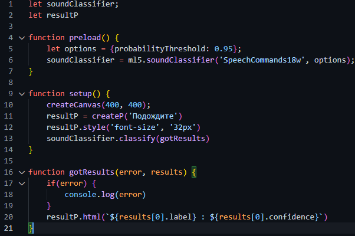

В ml5 есть датасет - SpeechCommands18w, который содержит в себе множество аудиозаписей в которых разные голоса произносят 18 слов - up, down, left, right, stop, go, yes, no и диапозон чисел от 0 до 9 на английском языке. Результат, того, что я сделал с этим датасетом в конце страницы.
Вот весь код этой программы:
В самом начале задаются переменные soundClassifier и resultP, которые пока что ничего не значат.
В начале фунции задется переменная options, которая представляет собой объект, который содержит лишь одно значение - probabilityThreshold равное 0.95, этот объект как бы говорит нейросети, чтобы она выводила результат программы на экран только в том случае, если она уверена, что он верен на 95 процентов и выше. Переменная soundClassifier обращается к ml5 к методу soundClassifier и подключается к датасету SpeechCommands18w.
С помощью функции createCanvas() создается холст размерами 400 н 400 пикселей. resultP получает значение createP, которое создает тег <p>, который содержит в себе текст - "Подождите", потом после загрузки программы в этом теге будет содержаться результат работы нейросети. далее к resultP применяются стили - задается размер шрифта 32 пикселя. К soundClassifier применяется метод classify со значением gotresults.
В функцию передаются два значения - error и results. Внутри функции находится конструкция if, которая отслеживает ошибки и если они происходят то функция выведет их в консоль. В resultP вводится значение {results[0].label}, которое обращается к массиву содержащему все предположительные ответы - results и берет нулевое значение из него - ответ, в котором нейронная сеть уверена больше всего. Также в resultP вводится {results[0].confidence}, которое означает уверенность нейронной сети в ответе.